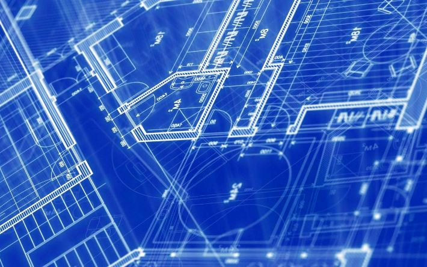
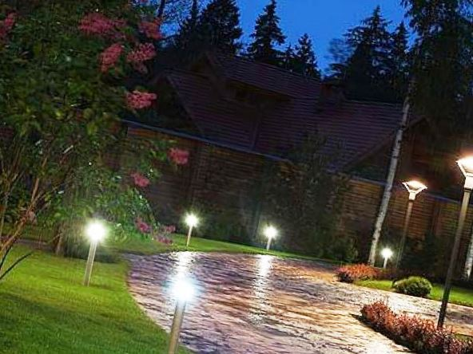

Качественный электромонтаж в Санкт-Петербурге и ленобласти, стаж 12 лет. Частный электрик, недорого и качественно.
Тел. 8 903 594 95 24 Николай.

Проектирование новой системы для освещения от частного электрика в Москве.
На сегодняшний день в учреждениях по проектированию современных систем освещения осуществляется практически любые виды проектов по освещению самых различных объектов.
Там работают не только собственные дизайнеры по световым эффектам, а и извне приглашённые опытные архитекторы. В результате такого сотрудничества возникает уверенность, что совместная коллективная работа мастеров по архитектуре, инженеров по светотехнике и практиков-электриков, и реальные дельные рекомендации от специалистов своего электромонтажного участка будут всегда гарантировать исполнение всех производимых работ только на высочайшем уровне, полностью удовлетворяя запросы заказчиков. Приступая к проектированию любой системы электроосвещения, уделяется особо пристальное внимание ко всем спецификам конкретного плана, соблюдению всех необходимых требований, какие регламентируют безопасную работу, оформлению бумаг. Создаются необходимые условия в последующей практической эксплуатации всего смонтированного оборудования. А при возникновении надобности, в самом течении работ по проекту проводятся и натурные реальные эксперименты, дополнительно разрабатываются уникальные кронштейны, необходимые узлы для надёжного крепления блоков и т.д.

Сколько стоит проектирование систем освещения.
| Цена работы. | От 200 руб. за кв. м. по полу. |

Опытным частным электриком будет подобрано самый оптимальный из возможных вариантов производимых устройств, соответственно конкретным заданиям, каковые и надлежит исполнять такому новому освещению. Например – обычный простой архитектурного тип освещения, или специальное освещение эвакуационное в коридорах, специальное аварийное освещение или уникально освещать подъездные дороги, осветить что-то с целью охраны и т.д. Профессионал всегда поможет любому заказчику создать свой уникальный дизайн в освещении, используя программу, на базе какой создаётся 3-х мерная компьютерная визуальная модель возможного реального проект освещения. Такое предварительное ознакомление нужно часто заказчику, чтобы он смог воочию видеть свой будущий вариант освещения и вовремя мог корректировать бы его вместе с проектантами. А на основании конкретной утверждённой концепции проекта и реального предназначения данного сооружения, частным электриком точно будет определён нужный вид, расцветка, общий дизайн всех используемых светильников, их необходимое количество. Все используемые приборы правильно подбирают по своей мощности и в строгом соответствии с реальным местопребыванием данного объекта.
Проектирование естественного и искусственного освещения.
Уже на завершающем этапе, настраиваются все реальные осветительные устройства. Сотрудники исполняют разные проекты современного типа освещения в таких областях человеческой деятельности – в обычном освещении жилья, освещать спортивные объекты, при необходимости осветить торговые и развлекательного направления центры, все промышленные виды освещения, в ландшафтном типе освещения, любая подсветка фонтанов, различное офисное освещение, на дорогах. И кроме непосредственно документального только проектирования, мастерами возможно выполнение электрического проекта, т.е. монтаж всех систем освещения. Все специалисты современной компании владеют большим опытом в проектировании, и всегда на хорошем уровне они осуществят необходимый комплекс мероприятий в проектировании новой системы освещения, начав с дизайн-проекта и завершая комплектом необходимой документации.
Наиболее частая деятельность в проектно-монтажных работах - освещение разного спортивного направления, стандартное решение в освещении объектов, дизайн любых торговых предприятий, проекты ночного вида корпусов, с учётом там внешнего типа рекламы, проекты электросетей в системах освещения площадей с разной интенсивностью, практический монтаж с дальнейшими пусконаладочными работами электросетей (до 10 киловольт).
В такие проектно-монтажные виды работ обычно входит:
- Обозначение конкретной задачи – первичное составление плана и дальнейшая возможная корректировка всего тех-задания. Общехудожественное оформление проекта.
- Светотехнический уровень проекта.
- Электрические компоненты.
- Состав конкретной спецификации оборудования.
- Увязка конечного плана с самим заказчиком.
- Законное своевременное утверждение документации в соответственных органах. Привязка утверждённого плана, к реальному предмету в натуре.
- Непосредственно монтажная, и необходимая пуско-наладочная процедура.
- Грамотное оформление всей необходимой документации. Окончательная сдача всего объекта заказчику.
 Поменять проводку в квартире.
Поменять проводку в квартире. Сколько будут стоить материалы.
Электрика в загородном доме стоимость работ.

Замена электропроводки в панельном доме.
Расценки на электропроводку квартир.
Замена проводки в хрущевке.
Электромонтаж в частном доме.
Электрика в загородном доме.
Сколько стоит замена электропроводки в двухкомнатной квартире?.
Электрик в новостройку однокомнатная квартира недорого.

Сколько стоит поменять электропроводку в 3-х комнатной квартире.